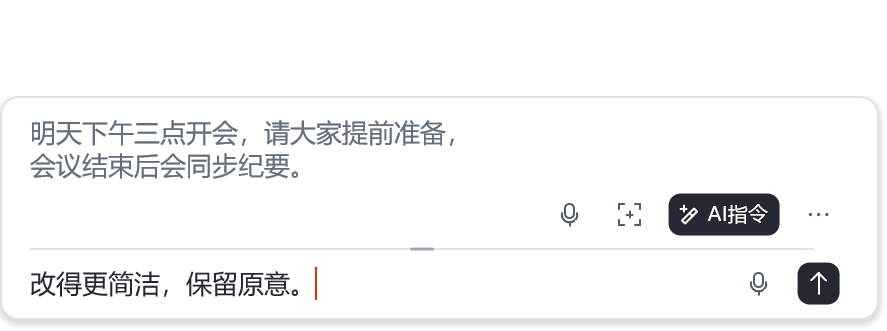
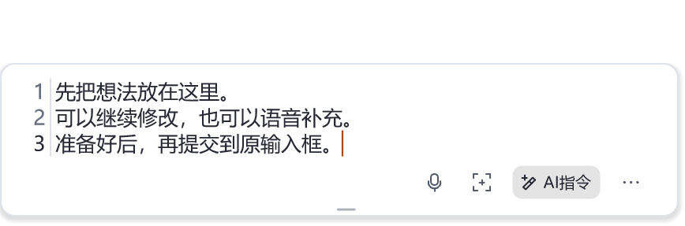
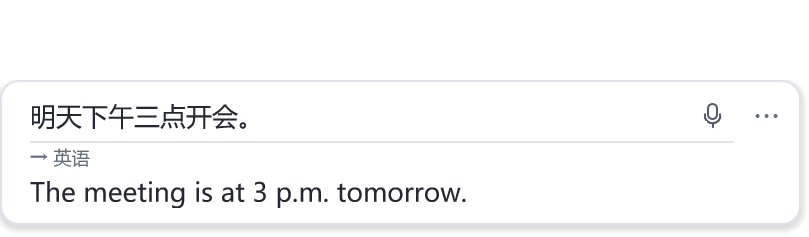
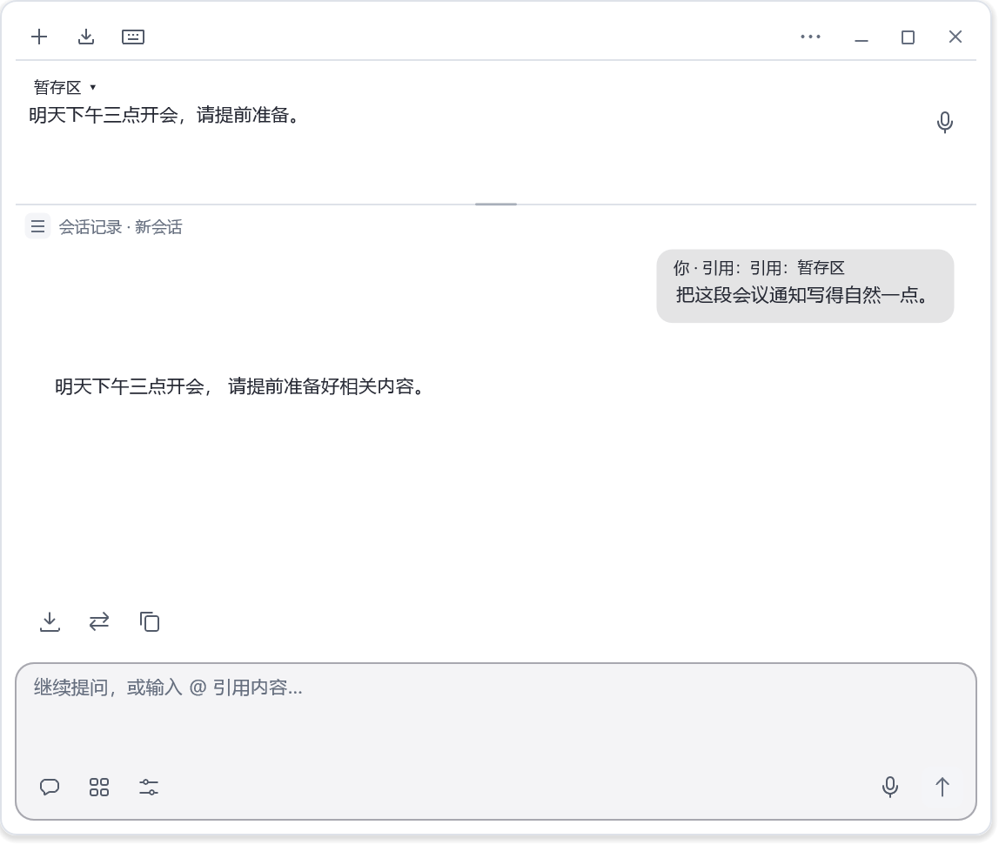
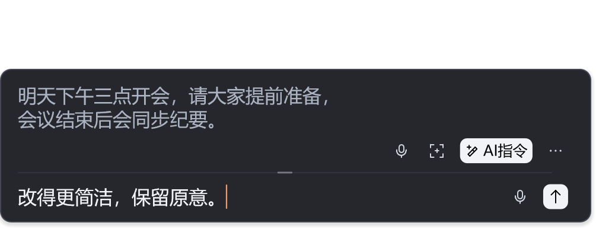
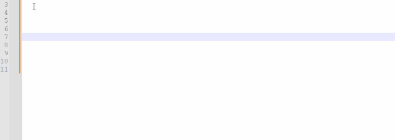

松果预览版
松果是这个项目现在的 Windows 桌面输入工具。从最初的实时打字翻译，扩展到中文输入、整段编辑、AI 对话和语音：在当前软件里唤起松果，先组织内容，确认后再把文字送回原来的输入框。
想体验现在的效果，请到 Releases 下载松果发行包。 本仓库同时保留早期 AHK 脚本；下载仓库源码得到的是下方介绍的 AHK 实现。
在输入框旁，完成输入和修改

AI 指令 · 上方组织正文，下方输入要求
| 输入与编辑 | AI 与跨语言表达 |
|---|---|
| 整段暂存：先写一句或一段，修改满意后再上屏；支持撤销、重做和暂存历史。 | AI 指令：围绕当前正文润色、改写、扩写，也可以直接提问。 |
| 多种输入方案：全拼、双拼、五笔等，按自己的习惯选择。 | 实时翻译：边输入边看译文，确认后把译文送到原软件。 |
| 语音输入：把说出的话变成文字，再继续编辑或提交。 | Chat 与 Agent：连续对话、附加图片；在 Agent 中使用文件搜索和可选工具。 |
AI、翻译和语音功能需在设置中配置对应的服务、模型或设备，联网与费用取决于所选服务。当前为预览版本，具体功能与更新说明以下载的发行包为准。
当前界面展示
以下界面图于 2026 年 10 月 17 日使用当前代码的原生界面重新生成，文字、译文及对话内容为本地演示样例。
文字暂存 · 先组织，再发送

实时翻译 · 原文与译文一起看

查看连续对话界面

查看深色界面

三步开始使用
- 下载并解压：打开 Releases，在附件中选择松果 Windows 发行包，完整解压。GitHub 自动生成的
Source code是仓库源码。 - 准备运行环境：首次使用运行包内的
00-Install-Runtimes.bat，按提示检查并安装所需运行组件。 - 开始输入：运行
SongGuo.exe，点一下要输入文字的位置，再按F3唤起松果。选好文字、完成当前编码后，按Enter把整段内容送回原软件。
需要系统输入法集成时，按发行包说明运行 Register-SongGuoTsf.bat。完整操作说明可在程序的内置帮助中查看。
先记住这几个按键
| 默认快捷键 | 用途 |
|---|---|
F3 |
唤起松果输入窗口 |
Enter |
没有剩余编码时，提交整段正文并退出 |
Ctrl + Enter |
提交正文后继续输入 |
Shift + Enter |
在正文中换行 |
Alt + A |
打开 AI 指令，改写正文或提问 |
F4 |
开始 / 停止语音输入 |
Alt + Y |
进入 / 退出实时翻译 |
Alt + G |
打开连续对话 |
快捷键可在设置中调整。实时翻译模式下，Enter 提交当前译文；以上正文提交说明对应普通暂存模式。
AHK 经典版
Real-time-translation-typing 的早期实现。 使用 AutoHotkey 构建悬浮输入窗口，调用翻译网页或 API，将原文或译文输入到当前软件；还包含语音转文字和 LOL 输入相关脚本。
这一部分适合继续使用旧版、阅读源码，或在 AHK 脚本上修改功能。松果预览版使用 C++ 开发桌面主程序，并保留 AHK 脚本支持；下面介绍的是本仓库保留的独立 AHK 版本。

AHK 经典版历史演示
如何运行
保留完整仓库的目录结构，使用兼容的 AutoHotkey v2H 运行。网页调用版本还需要 Microsoft Edge WebView2 Runtime。
| 入口 | 用途 | 启动方式 |
|---|---|---|
实时打字翻译.ahk |
网页调用版本，包含语音和游戏输入相关功能 | 拖到仓库内的 AutoHotkey.exe 上运行 |
实时打字翻译-API.ah2 |
通过后台线程调用翻译接口 | 配置 config/setting.json 后，拖到 AutoHotkey.exe 上运行 |
也可以在仓库目录执行：
.\AutoHotkey.exe ".\实时打字翻译.ahk"
网页版本当前脚本默认在搜狗与 DeepL 之间切换。第三方网页结构和接口可能变化，经典版的历史演示不代表这些服务当前均可用。
AHK 是怎样实现的
- 捕获输入：AHK 注册快捷键，接收键盘与输入法消息，在光标附近显示输入窗口。
- 获取译文：网页版本用 WebView2 加载翻译页面，通过脚本填入原文、监听译文变化；API 版本通过 Worker 线程与 ZeroMQ 通信发起请求。
- 回填文字：用户确认后，把译文或原文发送回原来的软件。语音入口通过 WebView2 中的网页语音识别回传文本。
| 源码位置 | 负责的内容 |
|---|---|
实时打字翻译.ahk |
主入口、快捷键、输入窗口和文本提交 |
utility/网页翻译集合.ah2 |
翻译网页适配与 WebView2 交互 |
实时打字翻译-API.ah2 · thread.ah2 |
API 版本入口、配置加载与后台翻译线程 |
utility/sound.ah2 · lib/语音.html |
语音输入与识别结果回传 |
utility/lol_game.ah2 |
LOL 场景的输入辅助 |
AHK 经典版快捷键
以下为网页版本的快捷键；API 版本支持其中的基础翻译操作。
| 快捷键 | 用途 |
|---|---|
Alt + Y |
打开翻译输入窗口 |
Enter |
输出译文 |
Ctrl + Enter |
输出原文 |
Alt + Enter |
发音 |
Esc |
隐藏输入窗口 |
Tab |
切换翻译服务 |
Ctrl + Alt + Y |
翻译剪贴板内容 |
Ctrl + C / Ctrl + V |
在打开的窗口中复制 / 粘贴 |
Alt + I |
语音输入 |
Ctrl + F7 |
网页调试 |
XButton1 / XButton2 |
LOL 窗口存在时，开始语音输入 / 提交原文 |
旧 API 版本配置
配置文件为 config/setting.json。在现有配置中选择主服务，并按需调整对应服务的字段：
| 字段 | 含义 |
|---|---|
cd |
默认翻译服务，对应配置中的服务名称 |
is_open |
是否加入可切换的服务列表，1 为启用 |
is_real_time_translate |
是否随输入自动翻译；支持此选项的服务设为 0 后用空格触发 |
BaiduFanyiAPPID / BaiduFanyiAPPSEC |
百度翻译所需的应用信息 |
例如，使用已有的搜狗配置时，可调整以下字段；这是局部示例，不要直接覆盖整个配置文件：
{
"cd": "sougou",
"sougou": {
"is_open": 1,
"is_real_time_translate": 1
}
}
按 Tab 在已启用的服务间切换。需要应用信息的接口须自行配置；具体可用性、额度和费用以服务提供方的当前规则为准。